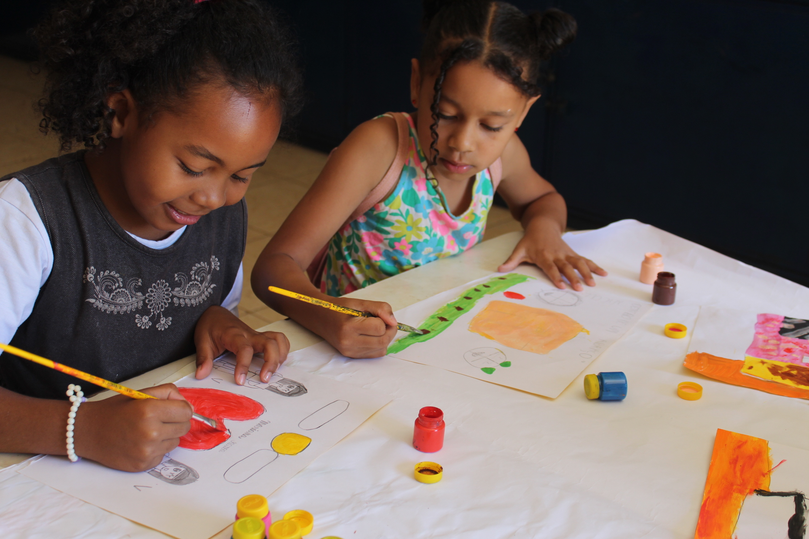

Todos os anos, milhares de crianças precisam de oportunidades para sonhar, aprender
e construir um futuro diferente. Com um gesto simples, você pode fazer parte dessa transformação.
Quando você destina para o Fundo da Criança e do Adolescente de Uberlândia, sabe exatamente para
onde seu imposto está indo: Ele chega para projetos aprovados, no âmbito do Edital de Chamamento
Público nº 001/2025, conforme a Resolução CMDCA nº 06/2026. Que são acompanhados e que impactam
diretamente crianças e adolescentes da cidade de Uberlândia.
Quando você não destina, o valor segue para o governo sem garantia de retorno direto para a
nossa comunidade.

